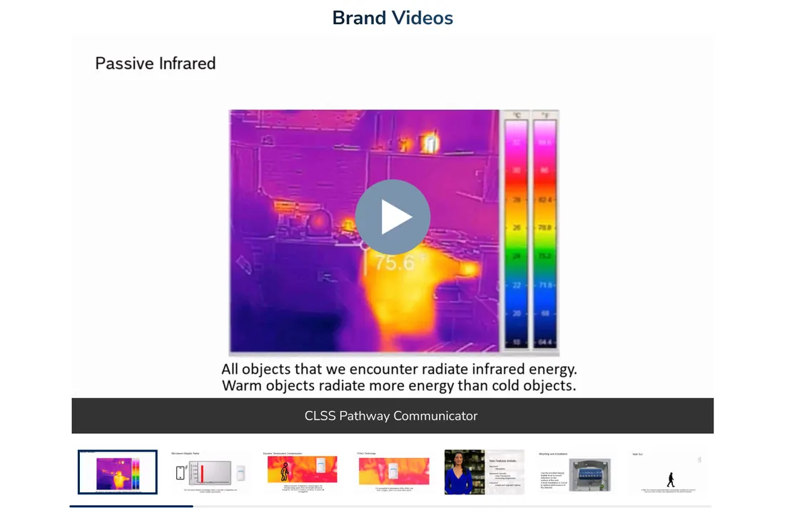

ADI / Resideo
Vendor brand pages, built as a system
A responsive component library that turns each vendor’s brief and assets into desktop, tablet and phone brand pages. Then analytics showed where the page could work harder.
Seven steps, owned end to end.
ADI carries products from hundreds of vendors, and the biggest get their own brand page. I ran the process from the first brief to measuring how the live page performed. Select a step to see what happens in it.
Brief
A kickoff call with the vendor’s marketing team using a one-page creative brief. I show the standard page order (hero, features and benefits, video, categories, resources) so everyone agrees on the skeleton before any design starts.
- Creative brief template
- Annotated page skeleton
- Kickoff call, about 30 minutes
Goals
What should a visitor do on this page? Launch a product line, push a promotion, or drive traffic to training? The answer decides which products sit in the hero and which call to action leads.
- One primary goal per page
- Featured products chosen with the vendor
- Success measure agreed up front
Asset specs
A spec sheet lists the exact dimensions, file types and safe areas for every section, so photography and copy arrive ready to use instead of after three rounds of resizing.
- Pixel sizes per section and device
- Copy length limits per module
- Safe areas for text over imagery
Brand kit
I collect the vendor’s UI kit or identity guide and translate their colors, gradients and graphic elements into the component’s style slots. Their brand, ADI’s structure.
- Primary and accent colors mapped to tokens
- Logo lockups checked against ADI’s header
- Contrast checked for every text color
Build
Images, copy and colors go into components from the brand-page library. No new layouts are drawn; every section is a proven part.
- Six component families
- Auto Layout handles copy length
- Review link shared with the vendor
Three sizes
Each section switches to its tablet and phone variant through one property. Content is entered once and follows to every size, so nothing has to be rebuilt.
- Desktop, tablet and phone in one file
- Developer handoff with redlines
- Prototype links for sign-off
Measure
After launch, Mouseflow heatmaps and scroll maps sit beside Google Analytics. What visitors actually do feeds back into the template for every vendor, not just this one.
- Heatmaps and scroll maps
- Click-through by section
- Template changes rolled out to all pages
Update once, and every size follows.
Instead of drawing a separate module for every device, each section is one component with size variants. Pick a component, then switch its size. This mirrors how the variants work in Figma.
18 modules to keep in sync
6 sections × 3 devices, each drawn, updated and checked by hand.
6 components with a Size property
Change the hero once and the tablet and phone versions update with it.

The same components, at every size.
Filled with Bosch’s assets, copy and colors, the library produces a complete brand page for each device. Section order, spacing and calls to action stay consistent everywhere. Hover the page to scroll it.
- Hero in Bosch’s brand gradient with product imagery
- Sticky in-page navigation with quick links
- Features and benefits in three modules
- Video spotlight and thin banner
- Categories, featured products and resources
- Brand videos, moved to the bottom
 Hover to scroll
Hover to scrollTwo findings that changed every brand page.
After launch I studied Mouseflow heatmaps and scroll maps alongside Google Analytics: where visitors landed, how far they scrolled and what they clicked.
What I saw
After scrolling the page once, visitors scrolled back up and down looking for featured products and prices.
What I changed
A sticky in-page navigation with quick links, so visitors can jump straight to any section.
clicks on the Featured Products section

Illustrative reach by section, redrawn from the heatmap pattern.
What I saw
The video section was one of the most scrolled-to areas and the second most clicked, but it trailed the hero by a wide margin.
What I changed
Added Videos to the sticky navigation and moved the video section to the bottom, so visitors pass everything else on the way.
click-through across the page

The milk-and-eggs principle
Grocery stores put milk and eggs at the back so shoppers walk past everything else. Putting the most-wanted content last does the same for a brand page, and it gave vendors proof that visitors engage with their whole page.
Faster to build, easier to use, proven to vendors.
The component system made each new page faster and more consistent across three sizes. The analytics work turned the template into something ADI could show vendors with real engagement data.
Production
One set of components serves every vendor and every size. New pages are assembled from proven parts.
Consistency
Asset specs and brand-kit intake keep each vendor’s identity intact inside ADI’s template.
Engagement
Sticky navigation and smarter section order raised Featured Products clicks by 25% and click-through by 15%.
Reported results, separate from the brand-page component project.
A size variant for the living room.
The component approach that serves desktop, tablet and phone is the same thinking a TV needs: one content model, rendered for a different distance and a different input. If these brand pages had a tvOS variant, this is what would change.
Type scale
Body from 16 px to 29 pt; headlines double. Copy limits tighten so cards still fit.
Hover becomes focus
Every link and card gets a focused state with scale and lift instead of a hover tint.
Navigation
The sticky in-page nav becomes a single focusable row; Featured Products is one click from the top.
Imagery
Vendor art gets safe-area guides at 60 and 80 pt so nothing important sits under overscan.